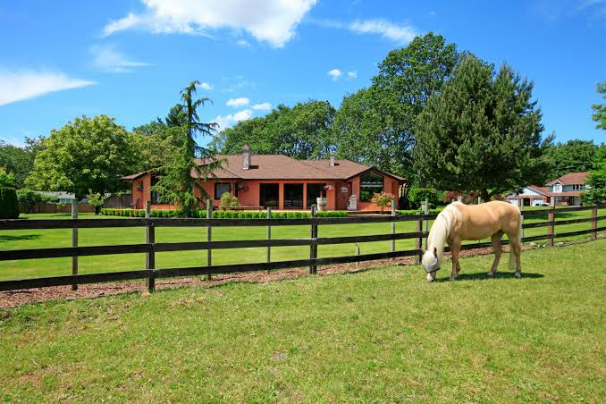

¿Quiénes somos?
Quién está detrás de Rienda
Hola, me presento, mi nombre es Gonzalo Corradi, estudiante de Ingeniería en Sistemas y amante del campo y el ganado. Pero... ¿cómo esto responde a la pregunta? Por el momento soy la única persona responsable y detrás de la app de Rienda.
¿Cómo nace Rienda?
Rienda nace a partir de una pregunta frecuente que me hacía a mí mismo... Estudio Sistemas, pero me apasiona el ganado... ¿Cómo voy a unir los dos mundos que amo? Y después de pensar mucho tiempo... nace Rienda. Un software de gestión ganadera.
